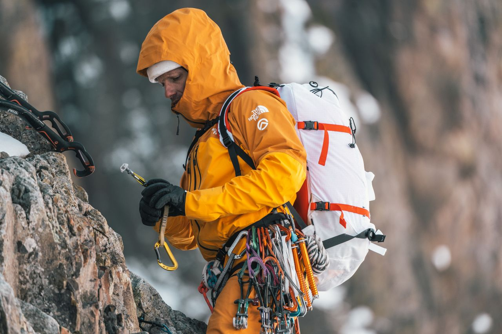
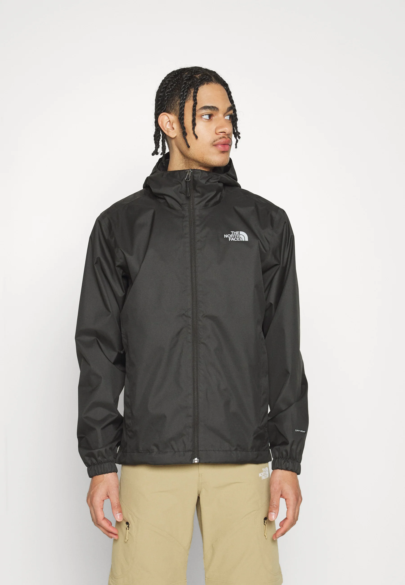
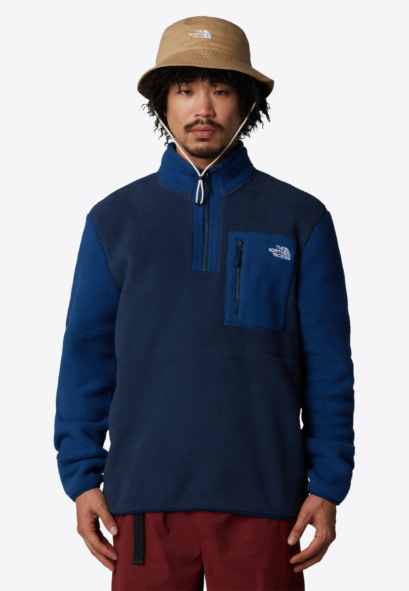
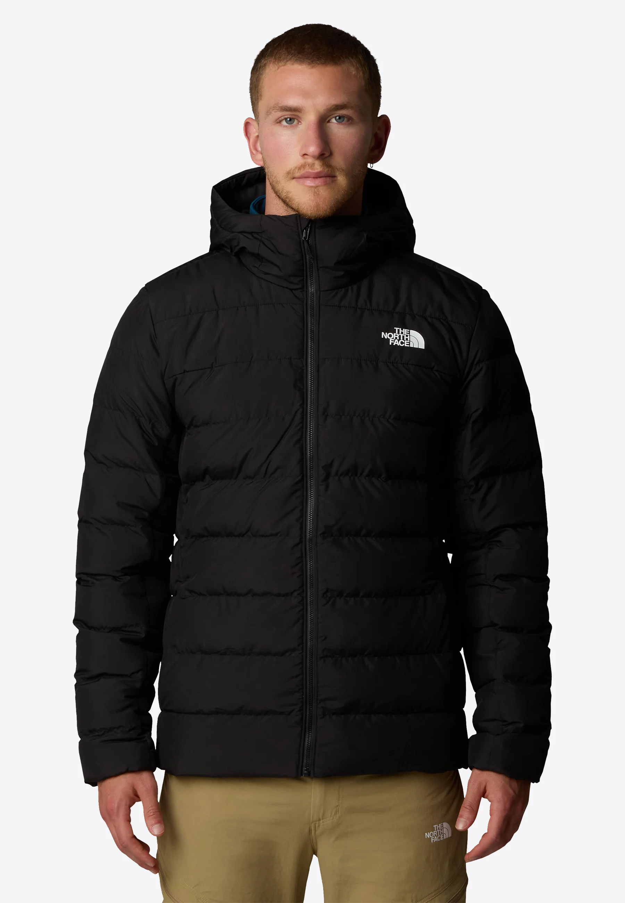

Descubre la combinación perfecta de tecnología y estilo para tus aventuras al aire libre. Equipamiento resistente, ropa cómoda
y mochilas diseñadas para acompañarte en cada desafío.

Colección North Face Outdoor

Stormbreaker Shell
Summit Glacier Down

Trail Comfort Knit

Arctic Ridge Pro
Call to action! It's time!
Sign up for our product by clicking that button over there!